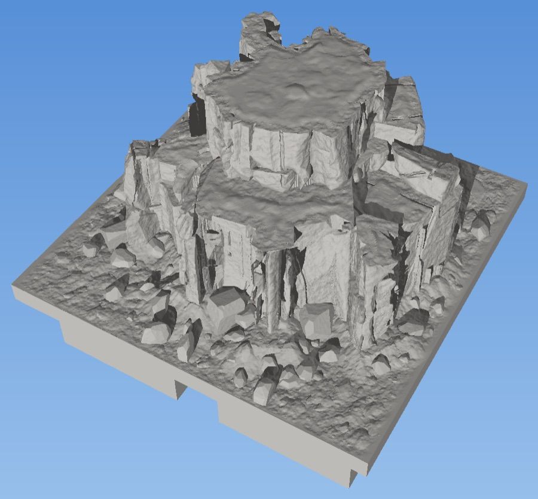
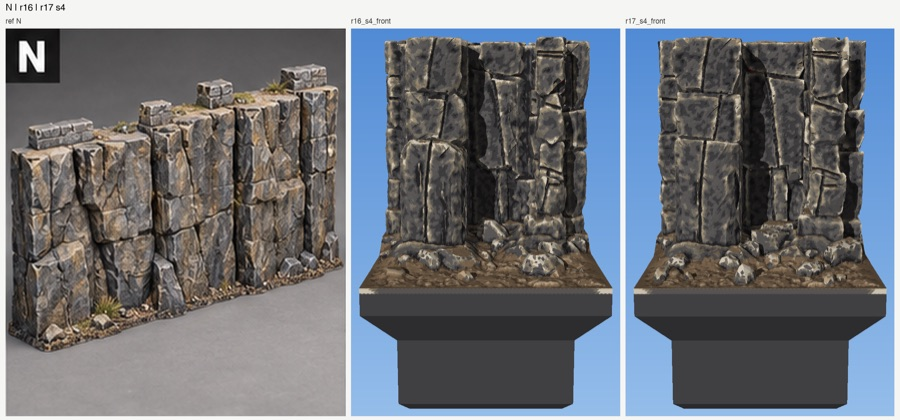
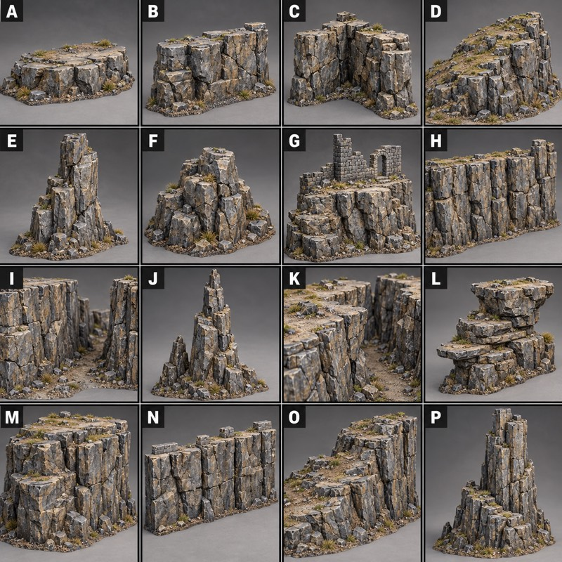
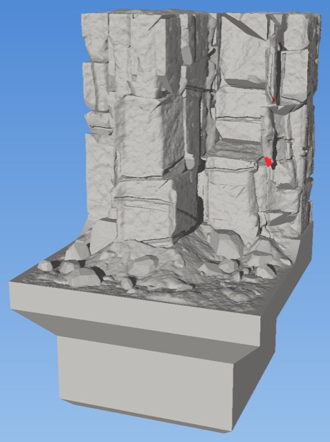
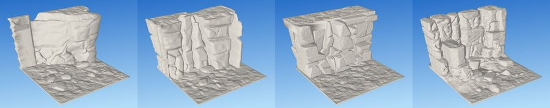
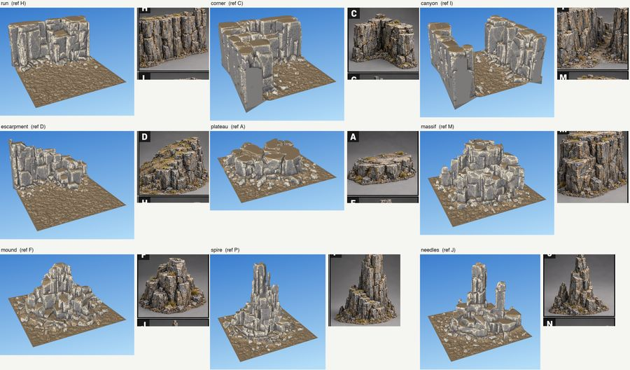
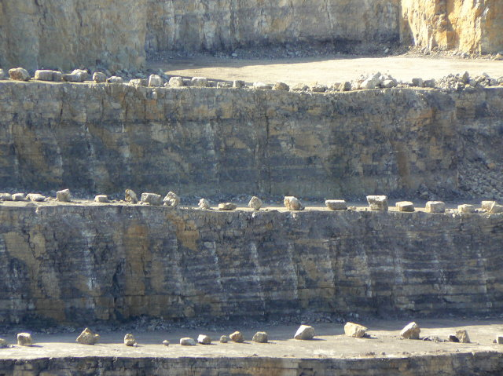

What it looks like
The cliff is built from broad, interlocking masses of stone of very different widths, not a pile of round boulders. Joints run mostly vertical, broken by short ledges. Columns of stone step forward and back, so the face casts deep shadows. About a third of the face is broken into clusters of smaller stones and cracks; the rest is quiet, flat rock. Edges carry a few crisp chips. Dirt lodges on the top and in hollows, and angular scree of the same stone lies at the foot.
No two seeds make the same cliff, but every seed reads as the same stone.


Forms
One generator makes every form on the reference sheet below. Today the run is the form that is tuned and approved; the others share its stone and finish.
| Form | What it is | Reference cells |
|---|---|---|
| run | A straight cliff along one tile edge, open to the front | B, H, N |
| corner | A run turning round two edges | C |
| canyon | Cliffs on two opposite edges | I, K |
| escarpment | A long, stepped rise across the tile | D, O |
| plateau | A flat-topped block standing free | A |
| massif | A big rounded outcrop | M |
| mound | A low heap of stone | F |
| spire | A single tall pillar | E, P |
| needles | A cluster of thin pillars | J |

Using it in a tile
In the Rust engine a tile is a short KDL document that names looks. This is the library's cliff run, library/tiles/cliffs/2x1-cliff.kdl (branch rust/p1): a 2×1 tile with a cliff along its north edge, dirt in front, and scree.
tile cliff-run size="2x1" seed=1 {
levels foot=4
stack {
dirt level=foot {
bank against=cliff height="1.5..3.5" reach="3..6.5"
scatter per-square=45 { pebble size="1..2.2" buried="20%..50%" }
}
cliff along=north height=35 {
rock mixed // or: columns, blocks, slabs
stone-size massive // or: rubble, broken
top dirt // or: bare
shattered patches=3 width="5..10"
}
scatter against=cliff per-square=55 reach=4 { stone size="1..6" mostly=small }
scatter against=cliff per-square=2.5 { boulder size="4.5..8" }
}
}Change seed for a different cliff with the same character. The cliff look reaches the Rust engine in phase P7 (see the plan). Until then the lab builds it: python clifflab/rockpile.py --form run --seed 1 --cols 1 writes an STL with a DungeonBlocks base to clifflab/out/. The language as a whole is on the language page.
Specification
Controls
The controls of the cliff entry. Everything else (the end section, gullies and buttresses, cracks, chips, grain) is fixed at the approved values.
| Control | Values | Default | Effect |
|---|---|---|---|
along | north, east, south, west | — | Which tile edge the cliff stands on. |
height | mm above the foot | 35 | How tall the cliff is. 35 mm is about one storey. |
depth | mm, or a range | 8–20 | How far the rock reaches into the tile from its edge. |
rock | mixed, columns, blocks, slabs, or weights | mixed | The kinds of stone. mixed is 38% columns, 38% blocks, 12% slabs, 6% odd, 6% monoliths. |
stone-size | rubble, broken, massive | rubble | Stone size: ×1.0, ×1.15, ×1.35. The library run uses massive. |
shattered | patches, width (mm) | 1.5 per square | Clusters of small stones and dense cracks between quiet faces. |
top | bare, dirt | bare | Whether dirt lodges on the rock tops. |
ledges | — | — | Shelves a miniature can stand on. Planned for P7. |
Sizes and levels
- Tile. Any size from 1×1 squares (35 mm each). A run fits on a 1×1.
- Height. The cliff top is 35 mm above the foot by default, and flat: the top edge is straight, with dirt on it.
- Foot. The ground in front sits 4.0 mm above the base today. It moves to the standard 3.4 mm edge level before P7, so cliffs meet other ground tiles flush (see edges).
- Stones. Widths vary at least four times over. Scree at the foot is 1–6 mm, with a few fallen blocks of 4.5–8 mm.
Edges and joining tiles
- Every cliff ends in the same full-height end section, 4 mm long and 11 mm deep, at both tile ends. Two cliff tiles of different seeds butt into one long cliff; the seam reads as another joint.
- Rock faces on the tile boundary touch it at their high points and never cross it. No stone is cut flat at the edge; stones that would cross are shrunk to fit.
- Tile sizes, edge names and the edge contract are on the tile system page.
Printing and painting
- No supports. Print base down at 0.2 mm layers with a 0.4 mm nozzle. Every overhang is aimed within 55° of vertical (65° at most, in small orange patches), and no layer reaches more than 0.6 mm past the one below.
- Cracks print as dark slots. They are 0.4–0.5 mm wide and cut straight in, so their tops bridge cleanly.
- No fragile bits. Nothing is thinner than one 0.45 mm line; there are no floating islands; every stone rests on the pile.
- Painting. Prime dark and drybrush: faces carry a fine grain (0.25 mm deep) that catches the brush, while joints and cracks stay dark. Joints read darker than cracks.
- Checked on every build. Each STL is one watertight body that survives a float32 reload, and every render paints any face past the overhang limit red.
The full printing rules are on the printing page.
How it is made
The generator is clifflab/rockpile.py (line numbers at commit 31f7c5d). It stacks stones under gravity, then dresses them. Four stages:
- Form.
make_form(line 413) turns the chosen form into contact planes (for a run: the back edge, both ends and the top) and a target profile the pile grows toward: stepped tiers, gullies cut back, buttresses standing out. - Stack.
stack(line 575) fills the lowest spot still short of the target with a stone: it picks a kind (column, block, slab, odd, monolith), grows a footprint, and rests the stone on its highest supports. Its underside fills down to what is below, so there are no gaps. Stones are bigger low down and in quiet zones, and stone tops are kept from lining up like masonry. - Finish. Stones sharing a footprint are dressed as one column whose faces run across the joints (
_plan_column, line 1035); columns stand flush or 2.5–4.5 mm back. Each resting stone gets a sloped seat instead of a flat underside (_seat, line 1674). A few chips are knocked off sharp edges (chip_edges, line 1600). Sparse straight cracks grow edge to edge and wrap round corners (_crack_net, line 1098), then each face is cut into slightly tilted sub-faces and the cracks are sunk in (_relief, line 1341). - Assembly. The stones are joined with a hidden core, so a gap between stones is a dark recess, never a hole. The foot ground, dirt bank, scree and top dirt are added, and the result is fused to the base.
Key constants
| Constant | Line | Value | Meaning |
|---|---|---|---|
DEPTH_MM | 78 | 8–20 | How far a run reaches out from the back edge (mm). |
END_MM | 88 | 4 | Length of the standard end section (mm). |
KINDS | 93 | 38 / 38 / 12 / 6 / 6 % | Column / block / slab / odd / monolith shares. |
COLUMN_STEP_MM | 126 | 0–0.6 or 2.5–4.5 | Column setback: flush or well back. |
CHIP_DEG, CHIP_LEN_MM | 153 | 60°; 3–7 mm | Which edges get chips, and how long. |
FACE_GRAIN_MM | 162 | 0.25 | Grain depth. |
OVERHANG_DEG | 171 | 55° | Overhang limit from vertical. |
REACH_MM | 173 | 0.6 | How far one layer may reach past the one below. |
ZONES_PER_SQUARE | 182 | 1.5 | Shattered zones per square of run. |
JOINT_MM | 187 | 0.8–1.2 | Joint chamfer: joints read strongest. |
CRACK_PER_MM2 | 215 | 0.06 | Crack length per mm² of face: sparse. |
CRACK_SLOT_MM | 232 | 0.4–0.5 | Crack width. |
Design record
For the people developing the look: Shawn's rulings, the requirements, audit numbers, the round history and open issues. Owned by the labs (clifflab). Approved: round 17, accepted 2 Nov 2026.
Rulings (21)
Shawn's decisions, oldest first. Each holds unless a later line replaces it.
| Date | Ruling | Shawn's words |
|---|---|---|
| 30 Oct | The design must reach every form on the sheet, not just a straight run. | “I love those photos, especially the range. We should not build something that can't meet those needs.” |
| 30 Oct | The depth-map cliffs (rev 3) set the bar for the look. | “These are the best cliffs I've ever seen. I love that you already cover all of the different use cases, including spires and stuff, and outcroppings, and all of this.” |
| 30 Oct | Cliffs must fit on a 1×1 tile: a thin band along the edge. | “these cliffs should be supportable in a 1x1 tile, and the thickness of the cliff should respect that.” |
| 30 Oct | Only the rim of a face on the tile boundary is low relief; the middle can be deep. | “It's just the edge of the face that is against the tile edge that needs to be low relief… the middle of the tile can have big cuts and rocky construction in it.” |
| 30 Oct | Faces on the tile edge are textured to the edge, not cut flat. | “you're clipping adjacent edges flat. They should be regular textured surfaces whose outside limits of texture touch the edge.” |
| 30 Oct | The depth map's stacked-block version regressed. This led to rockpile. | “the aesthetics have regressed… the kind of the sense of big piled up slabs, like, it doesn't really fit.” |
| 30 Oct | Rocks fill the space between contact planes (back, ends, top); the front is open. The top is a contact plane, with dirt on it. | “I think the top is a contact plane as well. The rock should end up be to touch the top.” |
| 30 Oct | The straight top edge is intended. Flat ceilings must be fixed by construction. | “top edge is intended to be a straight line. The flat ceilings should just be fixed.” |
| 30 Oct | End-to-end matching: a standard end section is enough. A few mm of mismatch reads as another joint. | “That's perfect. It's fine.” (on the end-to-end test, after asking “I wonder if we're being too strict.”) |
| 30 Oct | Some forms need massive blocks. | “I'd like to see more massive blocks in some.” |
| 31 Oct | After a test print: fine texture must read at print scale; the back wall is too flat. Edge stones touch the boundary plane; inner stones may sit back. | “Biggest problem: the fine surface texture does not read at printing scale. The fine texture is important for easy painting.” |
| 31 Oct | Voronoi “flake” chips on every face: rejected and reverted. | “I hate it. Sorry, undo this texture.” |
| 31 Oct | Make the existing grain stronger instead. | “so there is a fine texture on this. Can we just make it stronger?” |
| 31 Oct | Never cut a stone at the tile edge; shrink it back to touch. | “Clipping is bad. Whenever we do clipping, could we scale the thing back away from the clipped barrier instead?” |
| 31 Oct | Build resting stones with sloped bottoms that sink into the stone below, instead of adding keels. | “Could we, instead, construct the rocks in the first place with 45 degree bottoms? That embed into the rock beneath them?” |
| 31 Oct | Seams between stacked stones must read as grooves. | “still lots of stones that merge without meaningful grooves.” |
| 4 Nov | The 55° ruling is now a target with a 65° hard limit, for every look: faces between 55° and 65° are the band (orange, budgeted), over 65° fails (red). | “the 65 degree exception that we had for trees, let's generalize it. Anything can be up to 65 degrees. It's useful to know. The two colors is useful, separating them is useful, because one is conservative, one is more extreme. But cliffs should be allowed to have that 65 degree overhang as well.” |
| 31 Oct | The overhang limit is 55° from vertical, not 45°. | “45 is too conservative” |
| 1 Nov | Cracks must be thin, like the reference. | “Still gaping… We need the cracks to be thin, like in the reference photos.” |
| 1 Nov | Every crack runs its full width and depth to an edge, joint or crack. | “cracks should go to the end, not stop in the middle of a stone.” |
| 1 Nov | A crack reaching a convex corner carries on round it onto the next visible face. | “cracks don't go to an end and stop if there's another visible side.” |
| 2 Nov | Round 17 accepted. | “ok. I'm good with cliff round 17.” |
The target is Shawn's heroic cliff spec of 30 Oct 2026, kept in the archive. Its summary line: “That is where the heroic quality lives: broad, powerful masses of stone interrupted by deep, expressive fractures, rather than simply making everything jagged and rough.”
Requirements
The lab's requirement IDs, as written on 30 Oct 2026, with later amendments marked inline. [S] is checked by a script or statistic, [R] by eye. The original page is in the archive.
- REQ-RANGE-1 [R] The same machinery makes every form on the reference sheet.
- REQ-OUT-1 [S] A build writes an STL to
clifflab/out/. Amended 30 Oct (rockpile):<N>x<N>-pile-<form>-s<seed>.stl. - REQ-OUT-2 [S] One watertight body that survives a float32 STL reload, fused to the DungeonBlocks base.
- REQ-OUT-3 [S] The foot ground sits in the DungeonBlocks dirt band, 4.0 mm above the base. A run's top is 35 mm above the foot.
- REQ-OUT-4 [S] Deterministic per seed.
- REQ-FDM-1 [S] No downward face steeper than 45° from vertical. Amended 31 Oct: 55°, checked as layer reach (no layer more than 0.6 mm past the one below, no run of layers past the 55° cone).
- REQ-FDM-2 [S] No islands at 0.2 mm layers.
- REQ-FDM-3 [S] Fissures are wedges, never slots. Amended 1 Nov: cracks are thin slots, 0.4–0.5 mm wide, cut straight in, with ceilings that bridge.
- REQ-FDM-4 [S] No feature narrower than one line (0.45 mm); no relief under about 0.15 mm.
- REQ-FDM-5 [S] The top and the foot are solid down to the base.
- REQ-EDGE-1 [S] Edge cliffs are thin bands, 8–20 mm deep, so a run works on a 1×1 tile.
- REQ-RUN-1 [R] The face line wanders in plan: buttresses stand out, gullies cut back.
- REQ-RUN-3 [R] Rock all round; faces on the tile boundary touch it and never cross it; each run ends in the standard end section. Amended 31 Oct: stones that would cross the boundary are shrunk, never cut.
- REQ-RUN-4 [R] The top edge is broken and irregular. Amended 30 Oct: the top edge of a run is straight; the top is a contact plane with dirt on it. Free-standing forms may have broken tops.
- REQ-ROCK-1 [R] Interlocking masses, not stacked boulders; widths vary at least 4×. Amended 30 Oct: some forms use massive blocks.
- REQ-ROCK-2 [R] Mostly vertical and steep joints, broken by ledges.
- REQ-ROCK-3 [S] About 60% quiet, 30% fractured, 10% intensely broken, in clusters.
- REQ-ROCK-4 [R] Planes, not noise.
- REQ-ROCK-5 [R] Convex edges softened by weathering. Amended 1 Nov (round 16): edges are broken by a few crisp chips instead of rounding; recesses stay sharp.
- REQ-ROCK-6 [R] Heroic depth: a little deeper than real. Columns jut and recede boldly.
- REQ-ROCK-7 [R] No pattern, no repetition.
- REQ-TOP-1 [R] Dirt on the rock tops, in joints and hollows, thinning to nothing at lips.
- REQ-FOOT-1 [R] Dirt with angular scree of the same stone, mixed sizes, densest at the face.
- REQ-FOOT-2 [R] No vegetation.
- Added 31 Oct. REQ-JOINT-1 [R] Every seam between stones reads as a groove; stones never merge.
- Added 31 Oct. REQ-GRAIN-1 [R] Grain strong enough to catch a drybrush at print scale.
- Added 1 Nov. REQ-CRACK-1 [R] Cracks are thin and sparse, run full depth edge to edge, and wrap round convex corners.
Named failure modes
| Name | Looks like |
|---|---|
| Stacked boulders | Rounded lumps piled up; no structural masses. |
| Organ pipes | Regular vertical columns, like basalt. |
| Layer cake | Even horizontal bedding, like sandstone. |
| Masonry | Blocks in courses, right angles everywhere. |
| Gravel | Everything fractured; no quiet faces. |
| Noise blob | A melted, lumpy surface with no planes. |
| Wallpaper | A visible repeat. |
| Paint-on | Relief too shallow to cast a shadow. |
| Cartoon | Absurdly deep, jagged or spiky. |
| Scale marker | Uniform pebbles or same-size blocks. |
| Sawn end / clipped stone | A flat cut face or a stone cut off at the tile edge. |
| Ceiling | A flat downward face under a resting stone. |
| Merged stones | Two stones fused with no groove. |
| Gaping / dead-end crack | A wide slot, or a crack that fades out mid-stone. |
| Upholstery welt | A crack close beside an edge, leaving a raised rib. |
| Cloth folds / crumpled faces | Grain hanging like drapery; faces that read wrinkled. |
| See-through hole | Daylight through the pile between stones. |
Acceptance scenes
| Scene | Content | Passes when |
|---|---|---|
| Iteration sheet | One tile beside its reference cell (clifflab/iterate.py --ref N) | Shawn judges it against N, H or C. |
| Seed sweep | 1×1 run at seeds 1–6, plus 2×2 run, corner and massif at seed 1 | All watertight; no failure mode; no two alike. |
| Long run | Three tiles of different seeds end to end | Reads as one cliff. |
| A 1×1 run, primed and drybrushed | Cracks stay dark, faces catch the highlight, nothing needed support. |
Audit numbers (round 17)
By construction: seats slope 3° inside the 55° limit (SEAT_SLOPE, line 177); every stone rests on the pile; chip ends run out at 45°; cracks are at most 0.5 mm wide, inside the 0.6 mm reach; sub-face cuts shear down-and-in at 45°; the hidden core backs every joint; stones are shrunk to the tile boundary, never cut.
Checked: overhang_faces (line 2155) slices the mesh every 0.2 mm as a slicer does and flags faces past the reach limit; every render paints them red (clifflab/iterate.py:70). stl_safe (grasslab/grasslab.py:1060) rounds to float32, merges vertices and refuses anything that is not one watertight body.
| Tile | Watertight | Reach (mm²) | Thin (mm²) |
|---|---|---|---|
| 1×1 run, seeds 1–6 | all | 0, 0, 1.4, 0.7, 0, 6.6 | 123–245 |
| 2×2 run, seed 1 | yes | 2.5 | 428 |
| 2×2 corner, seed 1 | yes | 3.7 | 542 |
| 2×2 massif, seed 1 | yes | 5.3 | 1,028 |
“Thin” is wall area under the printable minimum, from a review script outside the repo; only the reach audit and the watertight check run in rockpile.py.

Round history
One line per variant, oldest first. All are in git (git log -- clifflab/).
| Date | Variant | What changed, and why |
|---|---|---|
| 30 Oct | Depth map, revs 1–5 (clifflab/clifflab.py) | The face is a depth map over a plan outline: Voronoi masses, V-groove fissures. Rev 3 was “the best cliffs I've ever seen”, but it could only make a crack network on a flat wall. |
| 30 Oct | Depth map, rev 6 | Stacked blocks inside the depth map. “the aesthetics have regressed”. |
| 30 Oct | rockmass (clifflab/rockmass.py) | Recursive plane splits of a volume. Read as crazy paving with large overhangs. Abandoned. |
| 30 Oct | rockpile gen-1 (58e8105, 1559f0a, 156ab80) | Gravity stacking toward a target profile; all nine forms. |
| 31 Oct | Massive blocks (5b69555) | Stone size per form; dirt on ledges. |
| 31 Oct | Seated stones (48af9ea, 34572d4) | Seats replace keels; 55° limit; fit, not clip; hidden core; stronger grain. Flake chips tried and reverted. |
| 31 Oct | Rounds 3–7 (a1df7be) | Column dressing; faces split into tilted plates. About 5/10 against N. |
| 31 Oct | Rounds 8–11 (803ba4f) | Height-field relief per face with a joined crack network. Still crumpled; cracks too open. |
| 1 Nov | Rounds 12–14 (049038d) | Thin straight-in cracks joint to joint; the layer-reach audit. |
| 1 Nov | Round 15 (3b56ae0) | Sparse block-splitting cracks with a step; cracks wrap corners. |
| 1 Nov | Round 16 (ee42cb8) | Chipped edges replace rounding; heavier joints; column setbacks. |
| 1 Nov | Round 17 (31f7c5d), accepted 2 Nov | Few crisp chips; bold setbacks; full-depth crack slots; core holes closed. |


Rust port
Phase P7, “Cliff and scree, once rockpile is frozen”: the last look to port. Exit gate: zero see-through holes, overhang at or below Python's, a massif in 60 s or less, Shawn's sign-off and a test print. The vocabulary exists (crates/dt-doc/src/looks.rs) and the library has one cliff tile. No parity contact sheet yet.
Reference photos
The photos and target images this look is judged against. Click a photo to view it large; arrow keys step through. Wikimedia Commons photos keep their file names and licences as given on their Commons pages.



Open issues
- Thin-wall area is still about twice what it should be, mostly where cracks meet sharp edges.
- The massif reports holes in its gullies (110 in the review measure); runs and corners report none.
- The foot sits at 4.0 mm; it moves to the standard 3.4 mm edge level before P7.
- dt-doc defaults
stone-sizetorubble, but rockpile's run usesmassive. - The thin-wall and hole checks live in a review script outside the repo; P7's parity harness needs them in code.
- Only the run is tuned; the other eight forms share its finish but have not been reviewed round by round.
References
- Reference photos and target images: the gallery above.
History
clifflab started on 30 Oct 2026 with Shawn's spec and reference sheet. The depth-map generator came first and stays in the repo (it still provides attach_base). rockpile replaced it the same evening, and 17 review rounds followed over three days; Shawn's test print of seed 4 on 31 Oct drove the grain, setback and fit changes. The full texts are archived: the original requirements, the depth-map design and iteration log, the heroic cliff spec, and the Rust study's variants and notes.